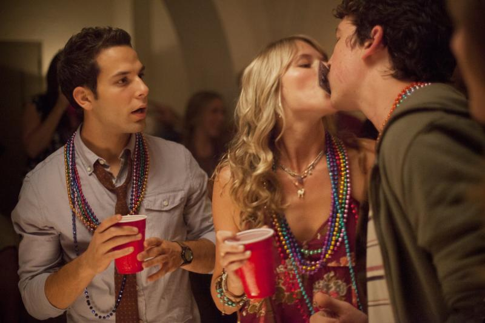
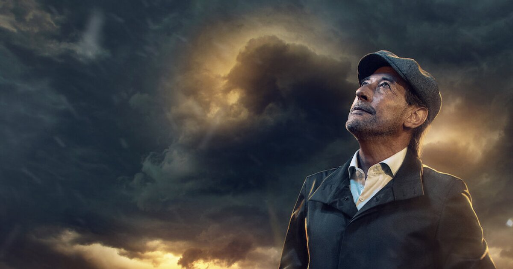

ENTRE DOS MUNDOS
Entre dos mundos narra la historia de un romance sobrenatural dentro de una línea fantasmal similar a Ghost pero en el terreno adolescente.
¿Cómo puedes superar la muerte de tu pareja cuando aún estás descubriendo quién eres?
Tessa (Joey King) es una joven que ha crecido en casas de acogida y cree que no merece vivir su propia historia de amor...
hasta que se enamora de Skylar. Después de sobrevivir a un accidente automovilístico que se cobró la vida de su novio,
la adolescente lleva un enorme cargo de conciencia y se obsesiona creyendo que su fantasma está intentando contactar con ella desde el otro mundo.
Tessa tratará de buscar por todos los medios una forma de comunicarse con Skylar y hablar con él una última vez antes de despedirse para siempre.
PROYECTO X
Project X es la historia de cómo tres alumnos de último curso de instituto aparentemente anónimos, tratan de darse a conocer. Su idea es inocente:
vamos a montar una fiesta que nadie pueda olvidar y llevaremos una cámara para inmortalizarla... pero nada podía prepararles para esta fiesta.
Enseguida se corre la voz cuando los sueños se arruinan, los expedientes se manchan y nacen las leyendas. Project X es una advertencia a padres y policía de todas partes.
SUPER COOL
En una de sus últimas noches como estudiantes del instituto, los amigos e inadaptados Evan (Michael Cera) y Seth (Jonah Hill) experimentarán una legendaria odisea durante una tarde
en la que intentan comprar bebida para una fiesta en la que estarán las chicas de sus sueños. En su peripecia les acompañará el indescriptible Fogel “McLovin” (Christopher Mintz-Plasse),
otro amigo inadaptado que acaba de comprarse un carnet falso que lo acredita como mayor de edad, con la ayuda de esto los tres amigos deciden comprar el alcohol. Esta película es una de la
mejores comedias que nos ha dado el cine de esta última década, además marca el punto más alto de la llamada “Nueva Comedia Americana”, que tiene otros dignos representantes como “Virgen a los 40”, “Ligeramente Embarazada”, “¿Qué paso Ayer?, etc.
UNA NOCHE LOCA

Phil (Carell) y Claire Foster (Fey) son una pareja sensata y agradable que reside, junto a sus dos hijos, en una casa situada a las afueras de New Jersey.
Los Foster tienen por costumbre salir una noche a la semana, para reavivar la chispa de sus antiguas cita esa y esa noche "especial" acuden siempre a la taberna Teaneck de la localidad.
La conversación que entre ambos se suscita va derivando rápidamente de la charla trivial al rutinario y tedioso diálogo que suelen mantener a la hora de la cena en su propio hogar.
Agotados por el trabajo y los hijos, sus citas "especiales" raras veces tienen éxito o algún tipo de acción y mucho menos, romance.
NUESTRO PADRE

El brillante y joven ingeniero reclutado para averiguar cómo acceder a su interior tendrá diez días para crear un plan, diez días para preparar el asalto,
diez días para aprovecharse de un plan de fuga irrepetible, en medio de la celebración del país europeo tras ganar el Mundial de Sudáfrica,
con tantos problemas y peligros que podrían acabar con su plan y todos en prisión, al final se logra el gran robo dando a entender que quizá haya nuevas entregas,
dejando abierta la posibilidad de más robos para este peculiar equipo.